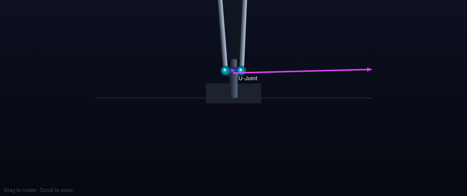
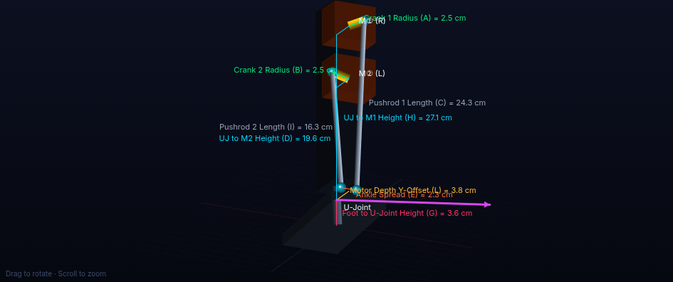
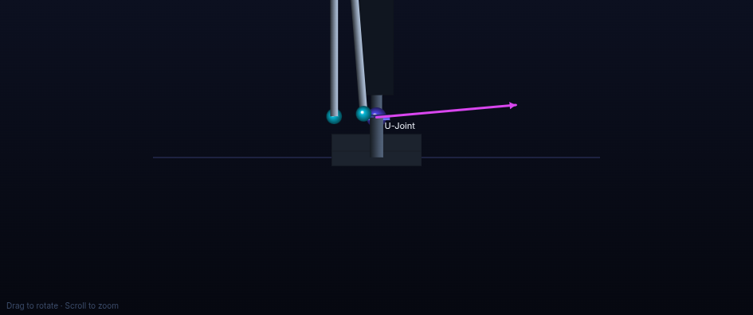
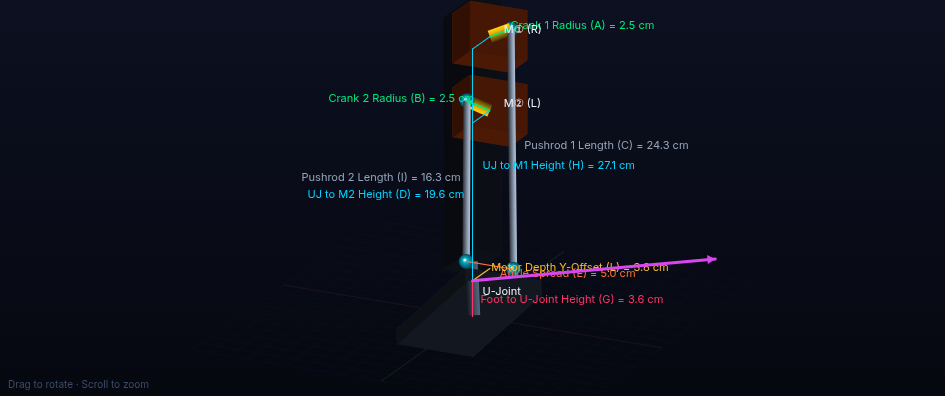
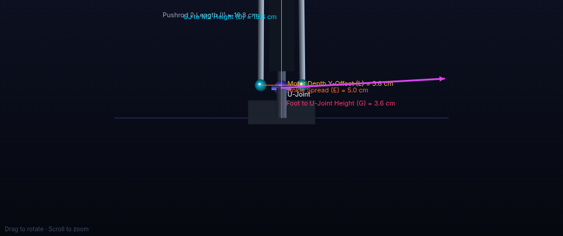
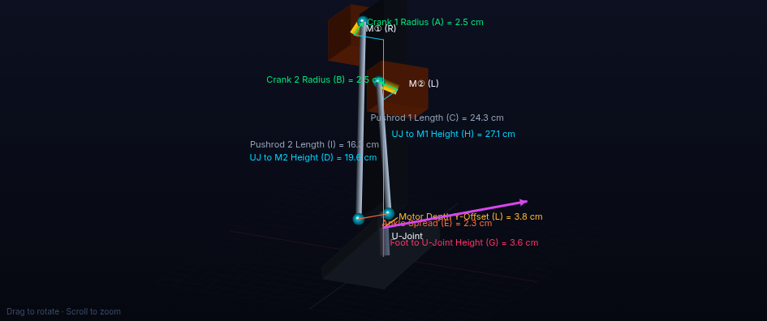
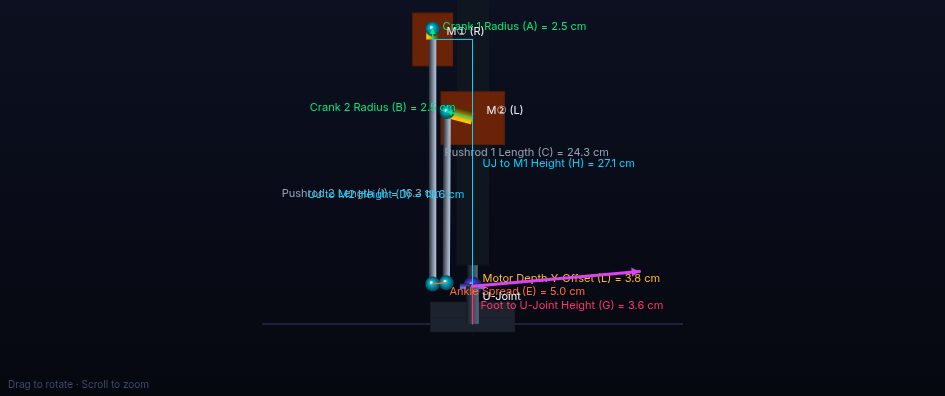
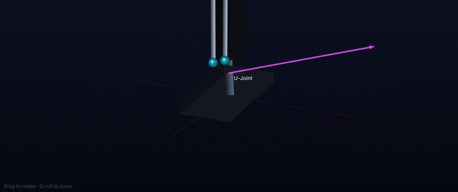

Complete torque evaluation of three Robstride motors (RS02, RS03, RS04) across four mechanism configurations for a 2-degree-of-freedom humanoid ankle joint. Each configuration is analyzed at every joint angle to determine worst-case torque capacity for both continuous operation and peak impact loading.
The ankle joint rotates around two axes: Pitch (tilting the foot forward/backward, like pressing a gas pedal) and Roll (tilting the foot sideways, like standing on the edge of your foot). These two combined let the robot balance on uneven ground.
Two rotary servo motors sit inside the robot's lower leg. Each motor has a short arm (the crank) attached to its output shaft. A long rod (the pushrod) connects the end of each crank arm down to the foot platform through a universal joint (U-Joint). When a motor spins its crank, the pushrod pushes or pulls the foot, tilting it. The two motors working together control both pitch and roll.
| Label | Full Name | What It Means |
|---|---|---|
| r₁, r₂ | Crank 1 / Crank 2 Radius | Length of the motor's arm. Bigger = more leverage but needs more space. |
| L₁ | Pushrod 1 Length | Length of the connecting rod from Motor 1's crank to the foot. |
| L₂ | Pushrod 2 Length | Length of the connecting rod from Motor 2's crank to the foot. |
| H | U-Joint to Motor 1 Height | Vertical distance from ankle pivot up to the top motor (Motor 1). |
| D | U-Joint to Motor 2 Height | Vertical distance from ankle pivot up to the bottom motor (Motor 2). |
| G | Foot-to-UJoint Height | Height of the ankle pivot point above the bottom of the foot plate. |
| E | Ankle Spread | Horizontal gap between the two pushrod attachment points on the foot. Wider = better roll torque. |
| L | Motor Depth Y-Offset | How far forward/backward the motors are offset from the ankle center. |
| h | Attachment Offset | Vertical offset of pushrod attachment on the foot above/below the U-Joint. |
Motor torque does not transfer 1:1 to the ankle. The linkage geometry amplifies or reduces it depending on the foot angle. We use the Jacobian matrix (a 2×2 matrix that changes at every foot position) to compute exactly how much ankle torque results from a given motor torque:
The worst-case minimum across all joint angles is what matters. If at any angle the torque drops too low, the robot falls.
Both motors face the same direction (rotation axes parallel). When the foot pitches, both motors cooperate (push together). When the foot rolls, motors oppose each other (one pushes, one pulls). Result: strong pitch, weak roll — especially with narrow ankle spread.
Motor 1 (top) is rotated 90° in yaw so its crank sweeps side-to-side. This separates the motors' action planes: Motor 1 primarily controls roll, Motor 2 primarily controls pitch. Result: balanced pitch and roll — decoupled axes.
Narrow gap between pushrod attachment points. Gives the motors very little lateral leverage for roll. This is the existing robot design.
Wider gap between attachment points. Directly increases roll torque by providing a wider base for the push-pull action.
| Motor | Continuous Rated Torque | Peak Impact Torque | Geometry Used |
|---|---|---|---|
| RS02 | 6.0 N·m | 17.0 N·m | r=2.5, L₁=24.3, L₂=16.3, H=23.5, D=16.0, G=3.6, L=3.8 cm |
| RS03 | 20.0 N·m | 60.0 N·m | r=2.5, L₁=22.2, L₂=11.2, H=22.2, D=11.2, G=3.6, L=3.8 cm |
| RS04 | 40.0 N·m | 120.0 N·m | r=2.5, L₁=22.2, L₂=11.2, H=22.2, D=11.2, G=3.6, L=3.8 cm |
RS02 uses the current base dimensions from the existing robot. RS03 and RS04 use updated dimensions from new physical measurements.
Guaranteed worst-case minimum ankle torque across the Pitch [−25°, +25°] and Roll [−40°, +40°] workspace limits, alongside the critical pose angles where the minimum values occur.
| Configuration | Motor | Limit Level | Motor Torque | Min Ankle Pitch | Critical Pitch Pose | Min Ankle Roll | Critical Roll Pose | Balance Ratio (P/R) |
|---|
Both motors face forward (0° yaw). Ankle spread = 2.3 cm. This is the existing robot design. Strong pitch but extremely weak roll.

Front View
Isometric View| Motor / Mode | -25° | -20° | -15° | -10° | -5° | 0° | +5° | +10° | +15° | +20° | +25° | MIN |
|---|
| Motor / Mode | -40° | -30° | -20° | -10° | 0° | +10° | +20° | +30° | +40° | MIN |
|---|
Both motors face forward (0° yaw). Ankle spread widened to 5.0 cm. Provides much better roll leverage than Config 1 while maintaining similar pitch.

Front View
Isometric View| Motor / Mode | -25° | -20° | -15° | -10° | -5° | 0° | +5° | +10° | +15° | +20° | +25° | MIN |
|---|
| Motor / Mode | -40° | -30° | -20° | -10° | 0° | +10° | +20° | +30° | +40° | MIN |
|---|
Top motor (Motor 1) rotated 90° in yaw — its crank sweeps side-to-side instead of front-to-back. This decouples the pitch and roll axes, giving nearly balanced torque even with narrow 2.3 cm spread.

Front View
Isometric View| Motor / Mode | -25° | -20° | -15° | -10° | -5° | 0° | +5° | +10° | +15° | +20° | +25° | MIN |
|---|
| Motor / Mode | -40° | -30° | -20° | -10° | 0° | +10° | +20° | +30° | +40° | MIN |
|---|
Top motor rotated 90° AND ankle spread widened to 5.0 cm. This is the most balanced configuration: pitch and roll are nearly identical and both very high. Recommended if space allows the wider spread.

Front View
Isometric View| Motor / Mode | -25° | -20° | -15° | -10° | -5° | 0° | +5° | +10° | +15° | +20° | +25° | MIN |
|---|
| Motor / Mode | -40° | -30° | -20° | -10° | 0° | +10° | +20° | +30° | +40° | MIN |
|---|
Side-by-side charts showing how all 4 configurations compare for RS03 (recommended motor) at peak torque (60 N·m).
| Metric | Config 1 Std E=2.3 | Config 2 Std E=5.0 | Config 3 Ortho E=2.3 | Config 4 Ortho E=5.0 |
|---|
A balanced mechanism has a ratio close to 1.0. The further from 1.0, the more unbalanced the torque distribution between pitch and roll.
| Motor | Config 1 | Config 2 | Config 3 | Config 4 |
|---|
The Robstride RS03 (20 N·m continuous, 60 N·m peak) is the optimal motor. It provides sufficient continuous torque for sustained balance and large peak torque for impacts. RS02 is too weak for roll stability. RS04 is unnecessarily oversized and heavy.
| Configuration | RS03 Continuous Pitch / Roll (N·m) | Balance Ratio | Assessment |
|---|---|---|---|
| Config 1: Standard, E=2.3 cm | Roll too low. Not recommended. | ||
| Config 2: Standard, E=5.0 cm | Acceptable if wider base is feasible. | ||
| Config 3: Orthogonal, E=2.3 cm | Best compact design. Balanced torque. | ||
| Config 4: Orthogonal, E=5.0 cm | Best overall. Perfectly balanced. |
| Parameter | Effect When Increased | Recommended |
|---|---|---|
| Ankle Spread (E) | Strongly increases roll torque (2.8× from 2.3 → 5.0 cm) | 5.0 cm if possible |
| Motor Depth Y-Offset (L) | Increases pitch torque slightly, minor effect on roll | 3.8 – 4.2 cm |
| Attachment Offset (h) | Shifts worst-case angle location; minimal overall benefit | 0.0 cm (neutral) |
| Motor Orientation | Orthogonal layout decouples axes, dramatically balances torque | Orthogonal (90°) |